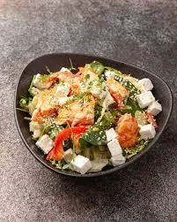

Задание 11 · Ташкент, 2026
Доставка еды и подбор обеда по бюджету
Shohjahon Saidov · @Shohjahon2707

Помочь покупателю выбрать блюда из ресторанов Ташкента, узнать стоимость доставки и оформить заказ в одном сервисе.
Подбирает обед на компанию и видит итоговую цену до подтверждения.
Кухня, курьер и оператор работают со статусами одного заказа.
Поиск по блюду, ресторану и кухне. Цены и доступность.
Добавление без входа. Перенос в аккаунт и выбор при конфликте.
Учёт часов работы, минимальной суммы и зоны ресторана.
Наличные при получении. Payme после подключения веб-кассы.
«Умный обед» подбирает наборы из одного ресторана по бюджету, числу человек, составу и времени. Сумма включает доставку.
60 000 сум
Два человека · без мяса · около 25 минутРис с нутом, салат и вода — 50 000 сум. Базовая доставка — 10 000 сум.
Python, Django 5.2, Gunicorn, WhiteNoise
Django Templates, HTML, CSS, JavaScript, Leaflet
SQLite локально, PostgreSQL в CI и серверном окружении
Git, GitHub, GitHub Actions и тесты Django
Веб-версия показывает полный путь покупателя от выбора обеда до заказа. Общий расчёт доставки связывает подбор, корзину и оформление.
Для рабочего запуска требуется подключить веб-кассу Payme и подтвердить сценарии оплаты в песочнице. Следующий этап включает отзывы, повтор заказов и кабинет партнёра.
Исходный код проекта